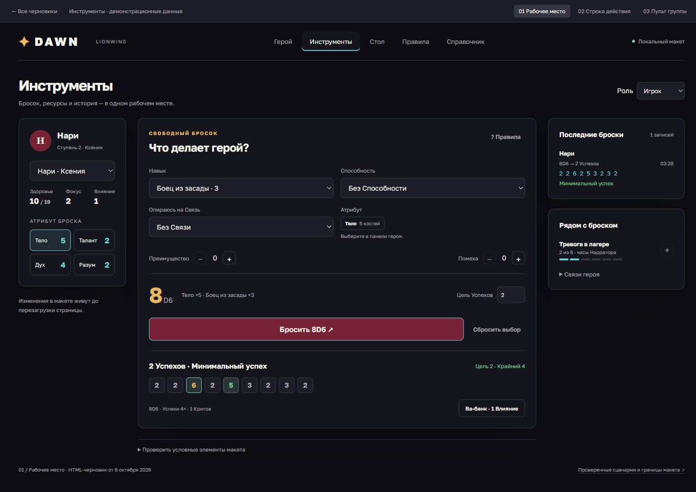
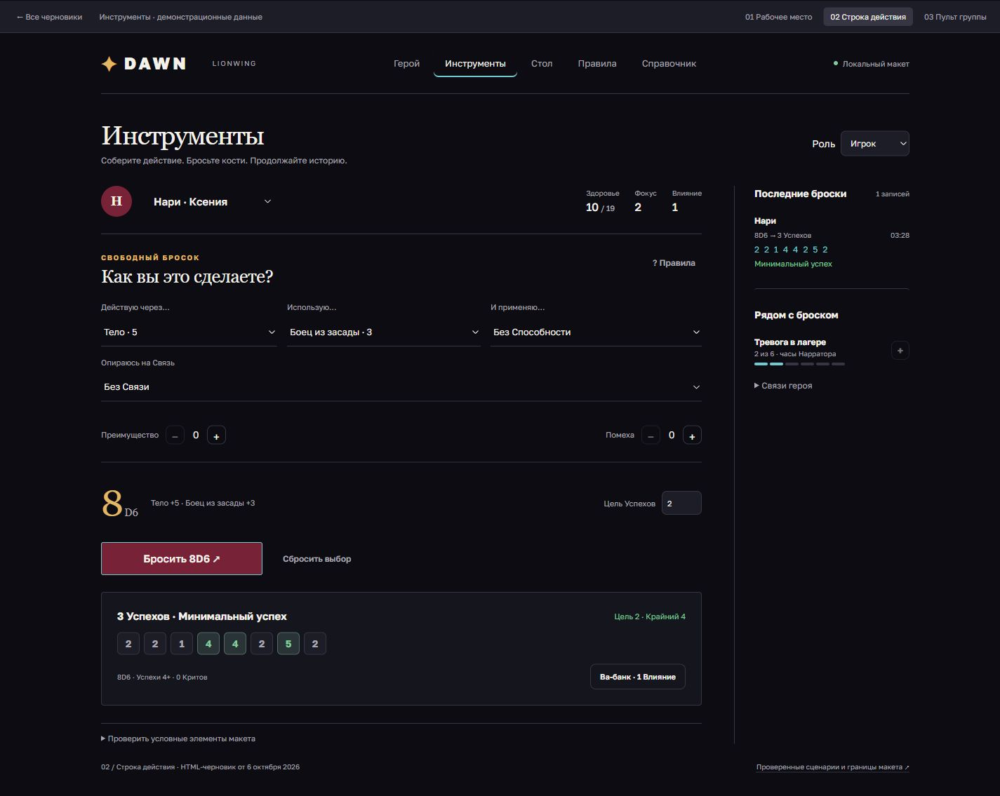
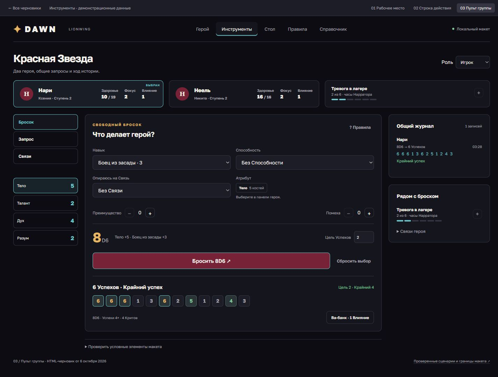

01 / Инструменты
Рабочее место
Все источники броска, ресурсы и итог рядом. Герой слева, рабочее действие в центре, журнал справа.
Попробовать вариант 01 ↗Изолированные HTML-черновики
Три компоновки Инструментов в текущей палитре компаньона и три узких сценария для проверки интерфейса. Все черновики кликабельные; данные в них демонстрационные.

01 / Инструменты
Все источники броска, ресурсы и итог рядом. Герой слева, рабочее действие в центре, журнал справа.
Попробовать вариант 01 ↗
02 / Инструменты
Короткая сборка броска без копии полного листа. Спокойная иерархия и пояснения по запросу.
Попробовать вариант 02 ↗
03 / Инструменты
Ресурсы двух героев сверху, явный запрос Нарратора, ответ игрока и общий журнал.
Попробовать вариант 03 ↗25 исходных находок. Наблюдения, гипотезы и ограничения проверки указаны в отчётах.
Боевой пульт · 8 находок
Рааша и три Вооружения. Цена, причины недоступности, отмена и подтверждение видны без полного текста техники.
Открыть черновик пульта ↗Путь броска · 8 находок
Гаджет и Связь, согласованный Риск, Ва-банк, завершение и свёрнутая история. Условные части листа.
Открыть черновик пути ↗Остальной интерфейс · 9 находок
Герой, редактор, Стол, поиск, справка поверх действия и явный возврат из полной главы.
Открыть черновик оболочки ↗Гаджеты отсутствуют в сборке свободного броска. Лист и Инструменты используют разные источники Способностей.
Цель на Ступени 3+ расходится с LionWing. Сейчас используется tier + 1 вместо таблицы сложности.
Запрос не хранит Риск. Последствия должны быть известны до броска и остаться в истории.
Боевые действия утопают в правилах. Первым экраном пульта должны быть команды и текущий выбор.
В рабочем приложении изменены порядок вкладок и меню токена: понятные команды, изменение здоровья, безопасное закрытие и позиция внутри поля. Эти локальные правки отделены от HTML-концепций. Реализация всех 25 находок ещё впереди.
Журнал проверки и перекрёстного аудита ↗